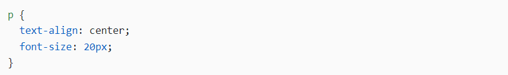

ТЕОРІЯ:
Селектори - це одні з фундаментальних механізмів CSS. Це ті ж теги, але з заданими параметрами властивостей. Саме вони вказують на те, до яких елементів будуть застосовні стилі, що вказані в фігурних дужках.

В даному СSS правилі, p - це селектор, тут він є селектором елемента. Це правило встановлює стилі для усіх елементів p на сторінці
Розрізняють багато видів селекторів: